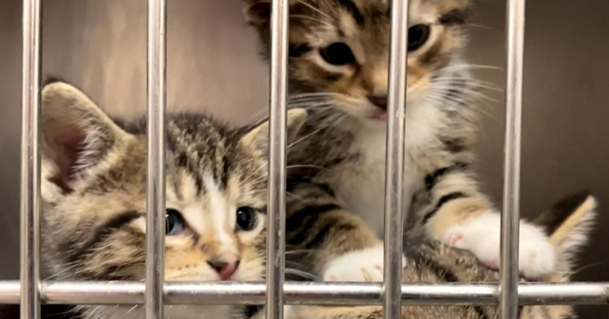

Chicago Animal Care and Control waving adoption fees through end of SeptemberCHICAGO (CBS) – Looking for a new addition to add to your family? Chicago Animal Care and Control is waiving all adoption fees for the rest of September. They are hoping to help pets find loving homes while making space at the shelters. "These are stray animals, so we just had a great adoption event on the 16th. About 28 animals found their forever homes," said Public Information Officer Armando Tejeda. "Unfortunately, since then, over 150 strays have come in alone." There is a shelter in Pilsen on Western Avenue, they're open daily from noon to 7 p.m. All animals are neutered, spayed, and fully vaccinated. for more features. |
 |